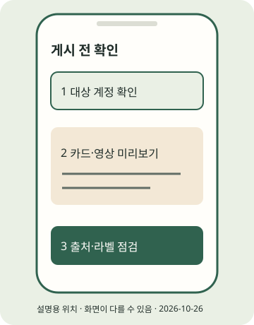

(실습) 실습편 / 7
(실습) 7. 앱으로 첫 게시하기
본인 파일을 앱에 게시하고 게시물 주소를 기록한다.
2026년 10월 조사 기준 · 확인일 2026-10-26 · 근거: PRAC-17 PRAC-18 PRAC-19 PRAC-21 PRAC-22 · E2E 한눈에 보기
진행 기록은 자바스크립트를 켜면 이 브라우저에 저장합니다.
이 실습의 흐름
핵심 경로입니다. 공개 URL·개발자 앱·토큰은 필요 없습니다. 아래 Instagram 메뉴는 7r에서 현행 한국 화면 미확인인 탐색 후보입니다. 실제 버튼과 다를 수 있으며 성공 화면을 본 것으로 서술하지 않습니다. 파일 전송은 공식 본문 근거지만 실기기 전송은 미검증입니다.

STEP 01 · PC 파일을 휴대폰에 원본으로 저장
PC 파일을 휴대폰에 원본으로 저장
지금 하는 일
검수한 카드와 MP4를 휴대폰에 옮깁니다.
왜 하는지
앱에서 원본 파일을 선택할 수 있어야 하기 때문입니다.
따라 하기
- cards/card-01.jpg~card-05.jpg와 reel.mp4를 준비합니다. 파일 순서·크기·재생을 전송 전후 비교합니다. 앱 게시용 파일을 인터넷 전체에 공개할 필요는 없습니다.
- Windows→Android USB: 잠금 해제 → 데이터 전송 케이블 연결 → 휴대폰 USB로 이 기기 충전 중 / Charging this device via USB 알림 → USB 사용 / Use USB for → 파일 전송 / File Transfer → PC에서 복사 → 꺼내기. 일부 단계는 Android 14 이상 문서 기준입니다.
- Drive→iPhone: PC에서 본인 Drive에 올린 파일을 휴대폰 Drive에서 찾아 더보기 / More → 사본 보내기 / Send a copy → 이미지 저장 / Save image 또는 동영상 저장 / Save video로 저장합니다. Open in → Save to Files는 사진 보관함 저장과 다릅니다.
- Mac→iPhone: Wi-Fi·Bluetooth·수신 허용 확인 → 파일의 공유 / Share → AirDrop → 본인 기기 → 필요하면 수락 / Accept. Finder AirDrop에 끌어놓기도 가능합니다. 사진/파일 앱 중 실제 저장 위치를 확인합니다.
메신저 전송은 압축 여부가 이번 조사에서 미확인입니다. 카카오톡 등으로 보냈다는 이유만으로 원본이라고 가정하지 말고 위 전송 경로와 전후 비교를 사용하세요.
이렇게 보이면 성공
휴대폰에서 카드의 작은 글자까지 읽히고 영상이 끝까지 재생됩니다. PC와 순서·해상도·화질을 비교했습니다.
이렇게 보이면?
- 충전만 되면 데이터 케이블과 파일 전송 모드를 확인하세요.
- Drive에서 파일 앱에만 보이면 사진 보관함 저장 경로를 다시 확인하세요.
- AirDrop에 안 보이면 Wi-Fi·Bluetooth·수신 대상을 확인하고 최신 공식 코드 안내가 나오면 따르세요.
Windows
Windows→Android는 USB, Windows→iPhone은 위 Drive 저장 경로를 선택할 수 있습니다. 기기 제조사·앱 UI는 다를 수 있습니다.macOS
Mac→iPhone은 AirDrop을 먼저 확인합니다. 다른 조합은 본인 Drive로 파일을 옮긴 뒤 해당 기기의 원본 저장 기능을 확인하세요.STEP 02 · 카드 묶음 선택과 미리보기
카드 묶음 선택과 미리보기
지금 하는 일
의도한 계정에서 캐러셀 카드 순서를 확인합니다.
왜 하는지
다른 계정·뒤섞인 순서·잘린 카드로 게시하지 않게 합니다.
따라 하기
- 앱 프로필의 사용자 이름이 대상 계정인지 확인합니다. 연습 샘플은 실제 뉴스가 아니며, 오늘 공개할 실제 자료는 실습 6 검수를 먼저 마칩니다.
- 아래 탐색 후보로 게시물 만들기 화면을 찾아 여러 항목 선택에 해당하는 도구로 card-01부터 차례로 선택합니다.
- 다음/미리보기에 해당하는 화면에서 모든 장을 넘기며 크롭·출처·순서를 확인합니다. 이 실습은 이미지 5장입니다. 앱 혼합·길이 상한을 단정하지 않습니다.
이렇게 보이면 성공
게시 전 미리보기에서 의도한 계정과 카드 5장의 순서·크롭을 본인이 확인했습니다. 아직 공유하지 않습니다.
이렇게 보이면?
- 파일이 안 보이면 사진 접근 권한과 저장 위치를 앱 도움말로 확인하세요.
- 화면이 다르면 아래 공식 도움말의 기능명을 검색하고 추정한 버튼을 반복 누르지 마세요.
Windows
이 단계는 Windows와 무관한 휴대폰 또는 웹 작업입니다. 휴대폰 OS와 앱 버전의 화면 차이는 공식 도움말로 확인하세요.macOS
이 단계는 macOS와 무관한 휴대폰 또는 웹 작업입니다. 휴대폰 OS와 앱 버전의 화면 차이는 공식 도움말로 확인하세요.STEP 03 · 릴스 파일 선택과 미리보기
릴스 파일 선택과 미리보기
지금 하는 일
독립 릴스로 MP4를 가져와 봅니다.
왜 하는지
파일 재생과 앱에서 보이는 자막·소리가 같은지 확인합니다.
따라 하기
- 카드 대신 릴스를 먼저 게시해도 됩니다. 두 포맷을 함께 게시하는 것은 필수가 아닙니다.
- 아래 후보로 릴스 만들기를 찾아 reel.mp4를 가져옵니다. 미리보기에서 시작·끝·표지·자막·소리를 확인합니다.
- 원래 녹음이 필요한 영상에 라이선스 미확인 음원을 덧붙여 해결하지 않습니다. 편집 뒤 내용이 바뀌었다면 파일·표시 검수를 다시 합니다.
이렇게 보이면 성공
앱 미리보기에서 선택한 MP4의 내용·자막·음성·표지를 본인이 확인했습니다. 카드만 먼저 게시한다면 이 단계는 나중에 해도 됩니다.
이렇게 보이면?
- 음량이 다르면 원본과 앱 음원/음량 설정을 함께 확인하세요.
- 앱 길이 제한이 보이면 화면의 조건을 읽고 기록하세요. 조사에 상충이 있어 현재 최대값을 단정하지 않습니다.
Windows
이 단계는 Windows와 무관한 휴대폰 또는 웹 작업입니다. 휴대폰 OS와 앱 버전의 화면 차이는 공식 도움말로 확인하세요.macOS
이 단계는 macOS와 무관한 휴대폰 또는 웹 작업입니다. 휴대폰 OS와 앱 버전의 화면 차이는 공식 도움말로 확인하세요.STEP 04 · 캡션과 AI·협찬 표시 확인
캡션과 AI·협찬 표시 확인
지금 하는 일
출처와 필요한 표시를 게시 전에 확인합니다.
왜 하는지
게시 뒤 수정이 가능하다고 가정하지 않기 위해서입니다.
따라 하기
- copy.json의 caption을 붙여 넣고 원출처·줄바꿈·경제적 이해관계 문구를 읽습니다. 표시 판단은 실습 6을 따릅니다.
- AI 자기공개·유료 파트너십이 필요한 콘텐츠라면 아래 후보와 공식 도움말에서 해당 기능을 확인합니다. 브랜드 승인·계정 자격은 미확인입니다.
- 필요한 라벨을 설정할 수 없으면 공유를 보류합니다. 캡션 설명만으로 라벨 의무를 대체했다고 판단하지 않습니다.
이렇게 보이면 성공
본인이 캡션·출처·필요한 라벨을 확인했고, 확인하지 못한 필수 표시가 없습니다.
이렇게 보이면?
- 필수 토글이 없으면 OS·앱 버전·계정 유형을 기록해 공식 도움말로 확인하고 게시를 보류하세요.
- 광고 허락 버튼과 파트너십 표시를 같은 동작으로 판단하지 마세요.
Windows
이 단계는 Windows와 무관한 휴대폰 또는 웹 작업입니다. 휴대폰 OS와 앱 버전의 화면 차이는 공식 도움말로 확인하세요.macOS
이 단계는 macOS와 무관한 휴대폰 또는 웹 작업입니다. 휴대폰 OS와 앱 버전의 화면 차이는 공식 도움말로 확인하세요.오늘의 결과를 기록하세요
내가 확인한 첫 게시물, 여기에 남기기
실제 게시물을 열어 확인했다면 첫 게시를 마쳤습니다. 수고하셨습니다. 이 기록 칸은 주소를 보관하며 게시 성공을 자동 판정하지 않습니다.
이 브라우저에만 저장합니다. 비밀번호·토큰을 입력하지 마세요. 저장이 차단되면 개인 메모에 주소를 보관하세요.
실습 10 · 첫 관찰 기록으로 →지금 내 손에 있는 것
본인 파일을 앱에 게시하고 게시물 주소를 기록한다. 아래 단계 확인을 모두 마쳤는지 E2E에서 다시 봅니다. 선택하지 않은 포맷·심화는 미완료로 남겨도 됩니다.